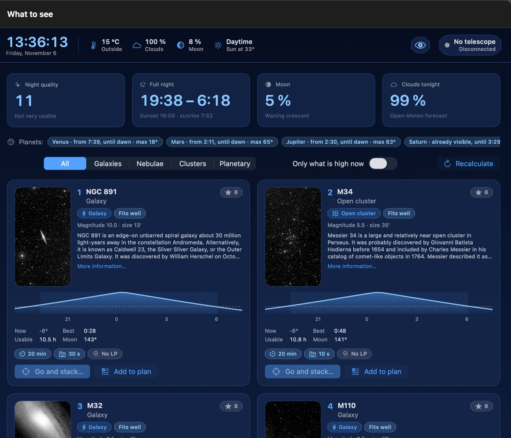
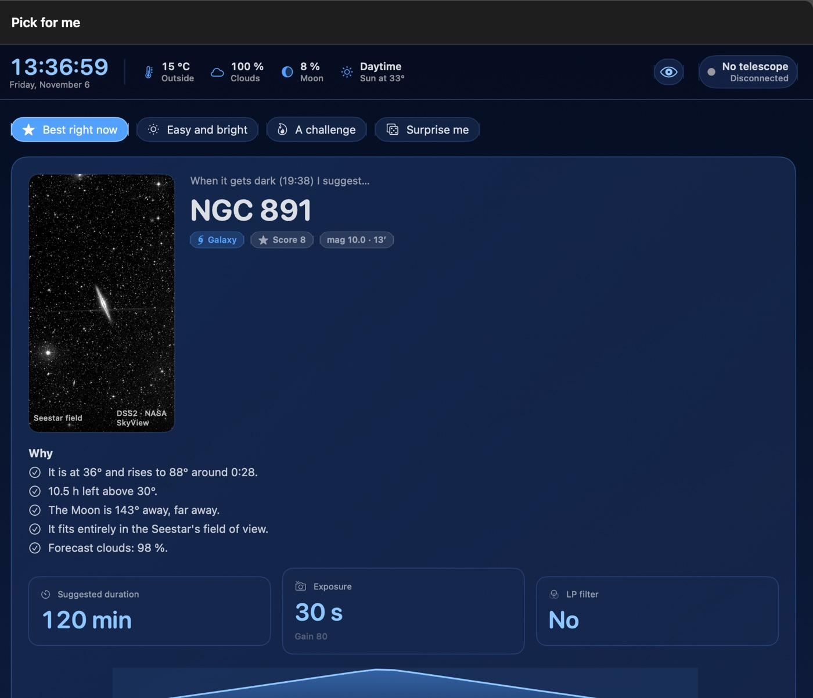
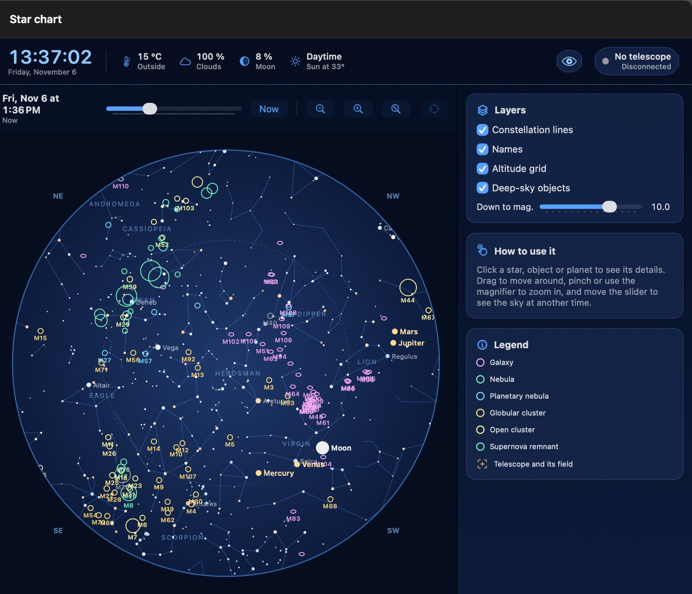
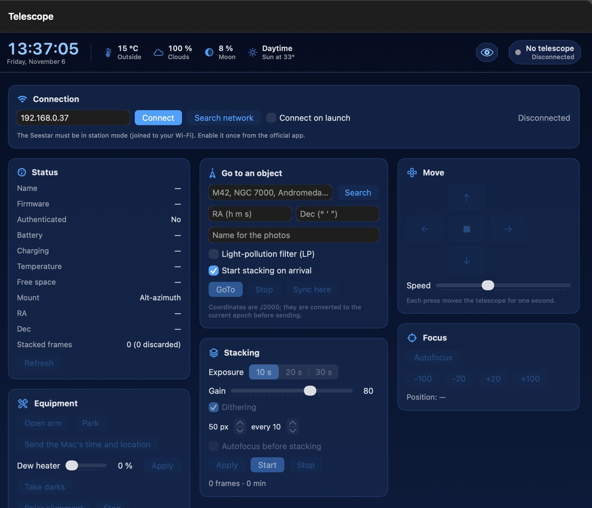
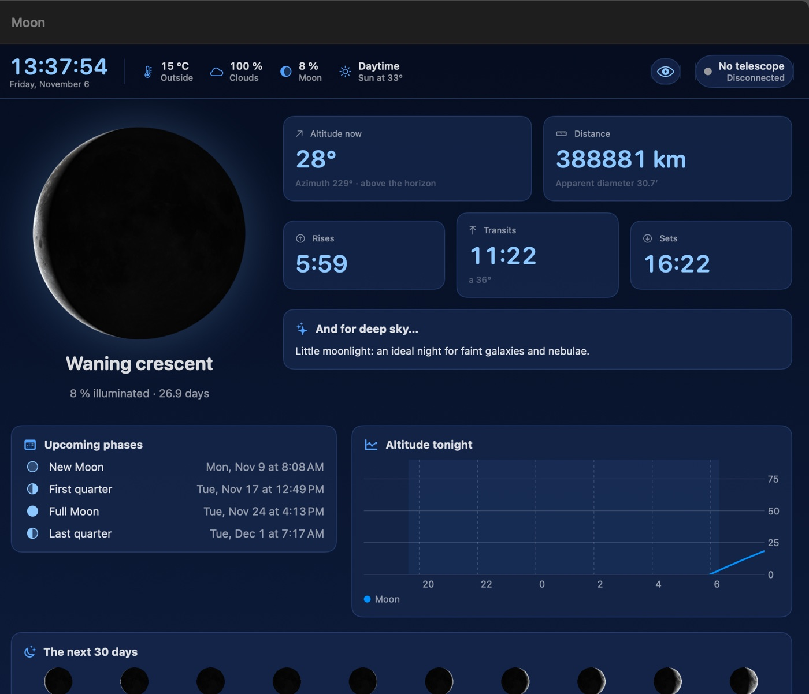
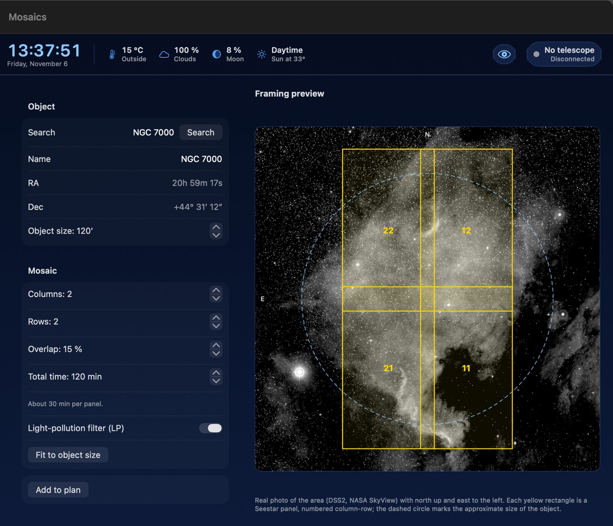
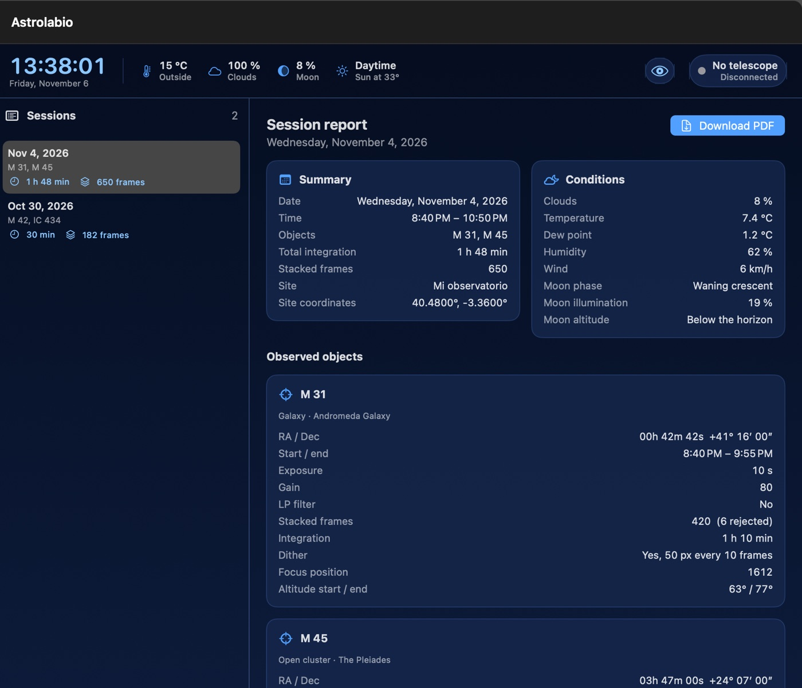

Your Seestar, from your computer
Astrolabio tells you what to observe tonight, points the telescope, shows the live image and keeps a report of every session. All in one window, in six languages.

What it does
Built to get the most out of the Seestar without relying on your phone, with a big screen and a keyboard.
What to observe tonight
Objects visible from your site given the Moon and clouds, with a picture, description and the best time.
Pick for me
One click suggests a target based on how much time you have and what you feel like seeing.
Full control
GoTo, stacking, focus, light-pollution filter, dithering, mosaics and automatic sessions.
Better live view
Edge cropping, calibrated background and colour, and a proper stretch for your stack.
Moon and planets
Phases, ephemerides, a star chart and a planetary stacker for your videos.
PDF reports
Every night is logged: objects, timing, conditions, settings and events, ready to download.
Statistics and album
Integration hours, favourite objects and the images stored on the telescope.
Night mode
Everything in dim red so you keep your dark adaptation.
Six languages
Spanish, English, French, German, Chinese and Russian.
Screenshots
Real screenshots of the app on a Mac.






Install
The app is not signed by Apple or Microsoft (it is a free personal project), so your system will warn you the first time.
Mac
- Open the
.dmgand drag Astrolabio to Applications. - The first time, right-click the app and choose Open.
- If macOS refuses, go to System Settings › Privacy & Security and click Open Anyway.
Or from Terminal:
xattr -dr com.apple.quarantine /Applications/Astrolabio.app
Windows
- Run
Astrolabio-…-Windows-Setup.exe. - If “Windows protected your PC” (SmartScreen) appears, click More info › Run anyway.
- You can also use the portable version: unzip it and open
Astrolabio.exe.
Requirements
- macOS 14 Sonoma or later (Apple Silicon or Intel).
- 64-bit Windows 10 or 11.
- Seestar S50 on Wi-Fi in station mode.
Connecting to the Seestar
- In the official app, enable station mode so the Seestar joins your home Wi-Fi.
- Connect your computer to the same Wi-Fi.
- Open Astrolabio: it finds the telescope automatically, or type its IP (shown in your router or the official app).
About the authentication key (PEM)
With recent firmware, the Seestar only obeys apps that identify themselves with a private key. Astrolabio does not include or distribute any key. The community has published seestar-tool, which can obtain it from your own copy of the official app; you then select the .pem file in Astrolabio’s Settings. Do this only with your own equipment and at your own responsibility. Without a key Astrolabio can show the status, but the telescope may ignore commands.
Find it useful?
Astrolabio is free. If you want to support its development, you can buy me a coffee.
☕ Support the projectDonations will be available soon.